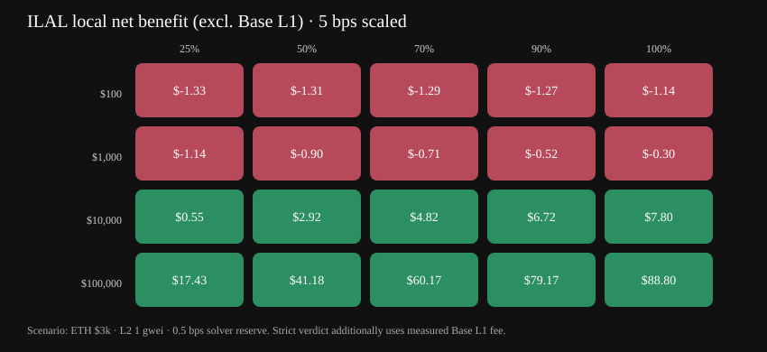
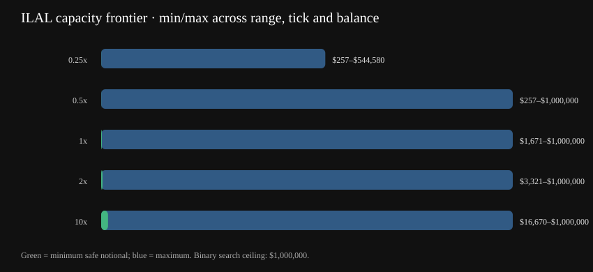

Institutional access and execution for Uniswap v4.
PROVE ELIGIBILITY ONCE · REUSE SCOPED ACCESS · NET VERIFIED FLOW BEFORE THE MARKET
Live Chainlink-guarded netting evidence
The current Base Sepolia candidate checks real Chainlink USDC/USD and USDT/USD feeds before opening every batch, then nets verified orders and sends only the residual to Uniswap v4. All first-party contracts have Sourcify exact creation/runtime matches. Active v0.3.3 remains a separate unaudited testnet demo.
Machine-generated institutional validation
Run make study-report to generate this evidence from repository results.
SUPPORTED—
NOT SUPPORTED—


Partner integration · Chainlink
Every batch must pass two independent opening boundaries: fresh Chainlink USDC/USD and USDT/USD data, then the Uniswap pool tick. Either failure reverts before nonce consumption or asset movement.
Both USD feeds are normalized onchain and checked individually and against each other. Invalid rounds, failed calls, stale or future timestamps, and depegs fail closed.
Uniswap v4 executes only the unmatched residual. Each institution retains its signed minAmountOut and maxAmmInput limits throughout the atomic batch.
Base Sepolia has no listed official sequencer uptime proxy, so that optional check is disabled. Mainnet requires the official feed and a 3600-second recovery grace period.
Customers
ILAL removes redundancy at both institutional boundaries: Session turns verified eligibility into scoped reusable access, while SOEE nets offsetting verified flow before the market. Institutions sign locally, permissionless solvers submit canonical batches, and issuers retain their compliance perimeter.
Prove eligibility, then sign exact-input EIP-712 orders locally. Offset flow settles directly between users while only the imbalance touches public liquidity.
Find offsetting orders and submit them in strict canonical order. Allocation is deterministic and solver-independent; execution is permissionless.
Manage eligible wallets through CNF, EAS or ZK policy paths. The hook and router finish every batch with zero token inventory.
Product suite
Uniswap v4 hook for eligible stablecoin flow. It verifies exact-input orders, matches opposite directions at raw-unit 1:1, and permits only the net residual to reach the pool.
Soulbound ERC-721 compliance credential with EAS or ZK issuance, timelocked root/verifier updates, revocation, expiry, and on-chain issuer metadata.
Permissionless batch execution with direct user settlement. It transfers matched flow peer-to-peer, routes one residual leg through v4, and leaves both router and hook with zero inventory.
@ilalv3/cli@next now includes the netting order, preview, execute and nonce-cancel workflow alongside V1 and V2 tooling. @ilalv3/sdk@next adds V2 session helpers.
npm i -g @ilalv3/cli@next
281 Solidity, 55 CLI and 18 SDK tests, plus 100,000 stateful invariant handler calls and 10,000 fixed-seed fuzz cases per critical property. Coverage includes Chainlink failure modes and post-preflight state races, conservation, canonical ordering, solver independence, cancellation, zero inventory and notional break-even stress tests.
The problem
Opposing institutional orders independently hit the pool, creating avoidable price impact and fee exposure.
Opaque ordering and allocation make execution outcomes depend on who wins the batch.
Generic intent systems do not enforce issuer eligibility at the final execution boundary.
Off-chain netting introduces an operator, balances to reconcile, and another settlement dependency.
ILAL's answer
Verify → match → net → route the residual. Every order is eligibility-gated and signed. Canonical allocation removes solver discretion, atomic settlement removes custody, and Uniswap v4 supplies liquidity only for the unmatched imbalance.
How it works
The candidate uses ILAL's existing eligibility surface. Each order owner must satisfy the pool policy before any matching or AMM interaction can occur.
EIP-712 binds the owner, side, amount, nonce and deadline. Users retain custody and can cancel a nonce before execution.
Any solver can sort 2–16 orders by ascending hash and submit the batch. Deterministic pro-rata allocation produces the same fills regardless of the solver.
Matched amounts settle directly between users. One residual leg reaches the AMM under the batch-start tick guard; hook and router end with zero token inventory.
Reproducible impact benchmark
25507090100Controlled Foundry comparison: two 6-decimal mock stablecoins valued at $1, 1:1 initial price, 0.05% pool fee and both vanilla execution orders. The first curve uses fixed liquidity; the break-even sweep scales liquidity with notional. Total gas includes encoded calldata and one ILAL versus two vanilla transaction envelopes, but excludes L1 data fees, production routers, MEV and solver costs. Lower LP fees benefit users but reduce LP revenue on offset flow.
For RWA issuers
Keep KYC and KYB inside your own environment. ILAL turns PII-free eligibility decisions into an encrypted credential tree, publishes only a policy commitment, and lets each wallet prove eligibility locally. The Hook sees a short-lived grant, never the institution's KYC tier, country, provider record, or identity documents.
npm install -g @ilalv3/cli@next
# Encrypted issuer-owned tree; no identity documents enter ILAL
ilal issuer tree init --issuer "Partner Sandbox" \
--schema institutional-kyc-v1 --allow-countries 840,826,756 \
--store ./private/issuer.enc.json --store-password-file ./issuer.password
ilal issuer tree import --file ./issuer-decisions.csv \
--store ./private/issuer.enc.json --store-password-file ./issuer.password
# Review commitment, publish policy through Safe, export a private witness
ilal issuer tree root --out ./artifacts/policy.json \
--store ./private/issuer.enc.json --store-password-file ./issuer.password
ilal issuer tree export-witness --wallet 0xInstitution \
--out ./private/witness.json --store ./private/issuer.enc.json \
--store-password-file ./issuer.password
# Institution proves locally, activates a short-lived grant, then trades
ilal policy proof generate --input ./private/witness.json
ilal policy grant activate --proof ./artifacts/v2-proof/proof.json \
--public ./artifacts/v2-proof/public.jsonIntegration
npm install -g @ilalv3/cli@next
ilal init
ilal --version # 0.4.0-v2-poc.7
# Public testnet prototype.
# Production use requires audited contracts
# and a real KYC/KYB attester.ilal --keystore institution.json \
netting order sign --zero-for-one \
--amount-in 100000000 \
--min-amount-out 99000000 \
--max-amm-input 30000000 -o order-a.json
# Output:
# exact-input order + EIP-712 signature
# private key never leaves the signerilal netting batch preview \
--orders order-a.json order-b.json
# Output:
# submitted gross: 170000000
# internally matched: 140000000
# AMM residual: 30000000 token0ilal --keystore solver.json \
netting batch execute \
--orders order-a.json order-b.json
# Output:
# ✓ atomic settlement
# ✓ router inventory: 0
# ✓ hook inventory: 0ilal --keystore institution.json \
netting nonce cancel --nonce 0x...
# Output:
# ✓ nonce cancelled
# subsequent batch execution revertsFull CLI reference
ilal status | Dashboard: credential · issuer config · pool policy |
ilal netting order sign | Create and locally sign an exact-input candidate order |
ilal netting batch preview | Inspect canonical allocations and the AMM residual |
ilal netting batch execute | Submit an atomic permissionless batch with a residual output floor |
ilal netting nonce cancel | Cancel an unused order nonce on-chain |
ilal credential status | Check whether a wallet holds a valid CNF credential |
ilal credential zk-root | Compute the ZK Merkle root for a wallet and expiry |
ilal credential prove | Trader flow: local ZK proof → mint or renew CNF |
ilal swap | Compliant swap via ILALRouter with a required slippage floor |
ilal oracle | Timelocked root, verifier, and proof-domain updates |
ilal pool add-liquidity | Add liquidity with maximum token spend bounds |
ilal pool remove-liquidity | Remove liquidity with minimum token receive bounds |
ilal pool policy set | Register compliance policy for a pool |
ilal session sign | Sign a standalone SessionToken |
ilal policy proof generate | Generate and locally verify a private V2 eligibility proof |
ilal policy grant activate | Cache a short-lived pool grant after on-chain proof verification |
ilal deploy --admin 0xSafe | Deploy an issuer-owned stack with custom EAS trust domain |
Base Sepolia · candidates + active demo
Current public candidate · Chainlink-guarded netting
Equal-decimal ERC-20 stablecoin PoC: exact-input, raw-unit 1:1 matching, zero netting fee, 2–16 orders and a batch-start ±100 tick guard. Permissionless solver; unaudited.
0x8d1fA4…600088 ↗
InstitutionalBatchRouter
Permissionless atomic execution · direct user settlement
0x96456C…732506 ↗
Current candidate execution evidence
Forward 0.10 / 0.07 batch 0.14 matched · 0.03 USDC residual ↗ 16-order reverse batch permissionless execution · 1,896,404 gas ↗Current Chainlink candidate pool
0xeab91a…fbc87
institutional pilot evidence · unaudited · not production-ready
Active · Base Sepolia v0.3.3
0x57d6fa…1aA9aEF ↗
PolicyRegistry
Per-pool compliance policy registry
0xB93fcF…ce47f52 ↗
ComplianceHook
Uniswap v4 beforeSwap hook — 6 checks per swap
0x9B894a…59CA80 ↗
ILALRouter
IUnlockCallback execution channel
0x2ccd39…ef99A77 ↗
v0.3.3 deployment verification
Safe admin and treasury Safe 1.4.1 · threshold 1 ↗ MockEAS demo attester testnet trust source ↗ Pool policy registered enabled=true ↗ Demo tokens funded 1,000,000 TOKA/TOKB ↗ Real EAS credential mint mintWithEAS tx ↗ Real add liquidity router + hook tx ↗ Real verified swap 0.05% fee path ↗ Router bypass patched authorizedRouter bound ↗ Uncredentialed wallet rejected CredentialInvalid() revert ↗Pool
0x1a05b4…82d1ad
0x05E733…3408
Public candidate · V2 ZK policy grants
Base Sepolia PoC only. The proving key uses a development ceremony and the testnet admin remains an EOA. The issuer integration kit is available as @ilalv3/cli@next; npm latest remains the isolated v0.3.3 stable demo.
0xD7E328…5864A80 ↗
PolicyGrantManagerV2
Groth16 verification and short-lived grant cache
0xb19121…47e43C11 ↗
PolicyRegistryV2
Issuer, KYC tier, jurisdiction and revision commitment
0x48eB31…7565325 ↗
ILALRouter V2
Bound execution with slippage and LP amount limits
0xcADfb9…00A3fD47 ↗
V2 public execution evidence
Groth16 policy grant activated revision 1 · verified on-chain ↗ V2 hook-gated liquidity added 362,275 gas ↗ V2 verified-flow swap 0.05% LP fee · 211,147 gas ↗V2 candidate pool
0x524f78…a104a4
public testnet PoC · unaudited